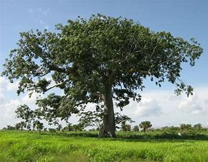

Ceiba, pochote

Breve descripción de la especie:
Árbol gigantesco de los más grandes en la América tropical, caducifolio, de 20 a 40 m. (hasta de 70 m.) de altura (en Yucatán alcanza hasta los 20 m. de altura), copa redondeada o plana muy amplia, hojas palmado compuestas, tronco cilíndrico sólido, grueso y recto, con contrafuertes grandes, flores actino mórficas perfumadas con pétalos blancuzcos a rosados, florea de diciembre a marzo. Los frutos son cápsulas oblongas o elípticas que contienen muchas semillas globosas de 4 a 8 mm. rodeadas por abundante vello sedoso blanco a gris plateado.
Descripción de su hábitat:
Se desarrolla en selvas caducifolias, perennifolias, subperennifolias y subcaducifolias. Se desarrolla en gran variedad de condiciones edáficas, desde suelos arenosos con drenaje muy rápido hasta suelos arcillosos e inundables parte del año. Prospera en terrenos calizos a menudo sobre litosoles.
Usos tradicionales de la especie:
Su madera se emplea para fabricar canoas, balsas, centros para madera terciada, cajas de empaque, etc. La semilla es comestible cocida o tostada. el aceite de las semillas se usa para fabricar jabones. La fibra algodonosa que rodea las semillas se utiliza en la industria como aislante térmico y acústico en cámaras frigoríficas y aviones y también para rellenar colchones, almohadas, chamarras etc. También empleado en áreas verdes en zonas urbanas.
Acciones de Gobierno encaminadas a su conservación:
Especie que se encuentra en reproducción en los viveros de la Secretaría de Ecología, para su posterior donación a programas de reforestación con fines de restauración ecológica y reforestación urbana. Especie muy apreciada para programas de reforestación por ser considerada una especie multiusos y por su valor cultural ya que fue considerado un árbol sagrado por los antiguos mayas.
Ubicación
A tu planta deberás colocarla en una zona donde reciba la luz del sol todo el día para que tenga un crecimiento y desarrollo excelentes. Además, es muy importante que esté a una distancia mínima de diez metros, ya que sus raíces pueden causar problemas si se encuentran cerca de tuberías, suelos pavimentados, etc.
Tierra
Jardín: sin exigencias de suelo, pero prefiere tierras con buen drenaje y ricas en materia orgánica.
Maceta: recomendamos rellenarla con un sustrato poroso a fin de evitar el encharcamiento.
Riego Son árboles que quieren agua, pero no demasiada. La frecuencia de riego deberá ser moderada, es decir, de unas dos-tres veces por semana en verano y una-dos por semana el resto del año. Riega a consciencia, humedeciendo bien toda la tierra o el sustrato. Y no mojes las hojas ni las flores pues podrían quemarse.
Abono
Es muy aconsejable abonar con abonos orgánicos como guano o humus de lombriz durante toda la temporada de crecimiento (de primavera a comienzos de otoño).